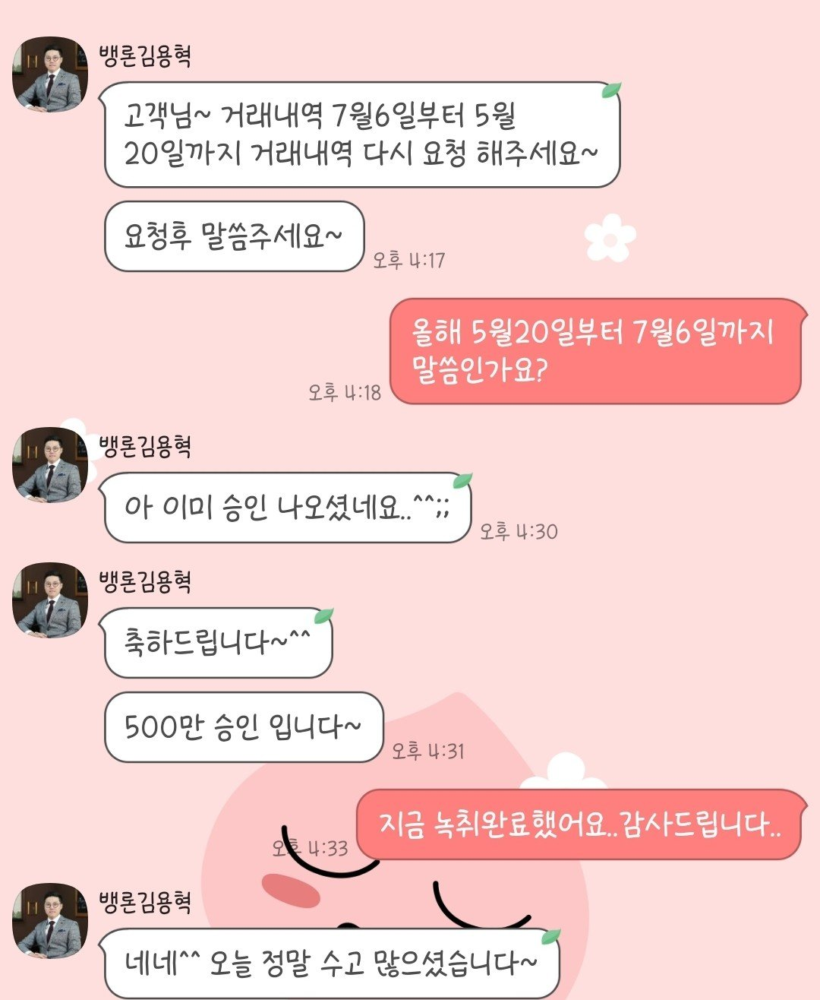
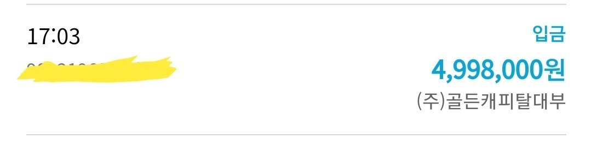

[개인회생자대출] 김용혁 이사님 감사드립니다..
개인회생 2회납입 인가받은 직장인입니다.
현 직장에서 9년째근무중이고 4대보험 가입된 상태인데요..
회생 시작하면서 다시는 대출받지 않으리라 다짐했지만, 사람일이
마음먹은대로만 되지는않네요.
급하게 자금이 좀 필요해서 다시 뱅크앤론을 찾았네요.
오전에 김용혁 이사님통해서 상담신청하고,
건강보험 자격득실.납부확인서.통장거래내역 등 필요한서류 준비해서 팩스로보내드리고, 접수해주신다고 말씀하신 정확한 시간에
금융사에서 연락이왔네요..
간단한 본인인증하고, 점심시간끝나고 기다리다보니 심사전화가왔구요.
간단하게 통화랑 녹취마치고나서 입금까지 진행됬어요.
원금 500/ 금리20%/ 5년원리금 균등조건이네요..
높다면 높은금리지만 회생중인 저에게는 감사한 자금이라 유용하게 사용해야죠.
잘 상환해서 회생도, 대출완납도 잘 진행하겠습니다.
항상 급하게찾게되도 방법을 찾아주시는 뱅크앤론이에요.
김용혁 이사님 통해서 상담과 빠른 입금처리까지 도와주셔서 너무 감사합니다.

